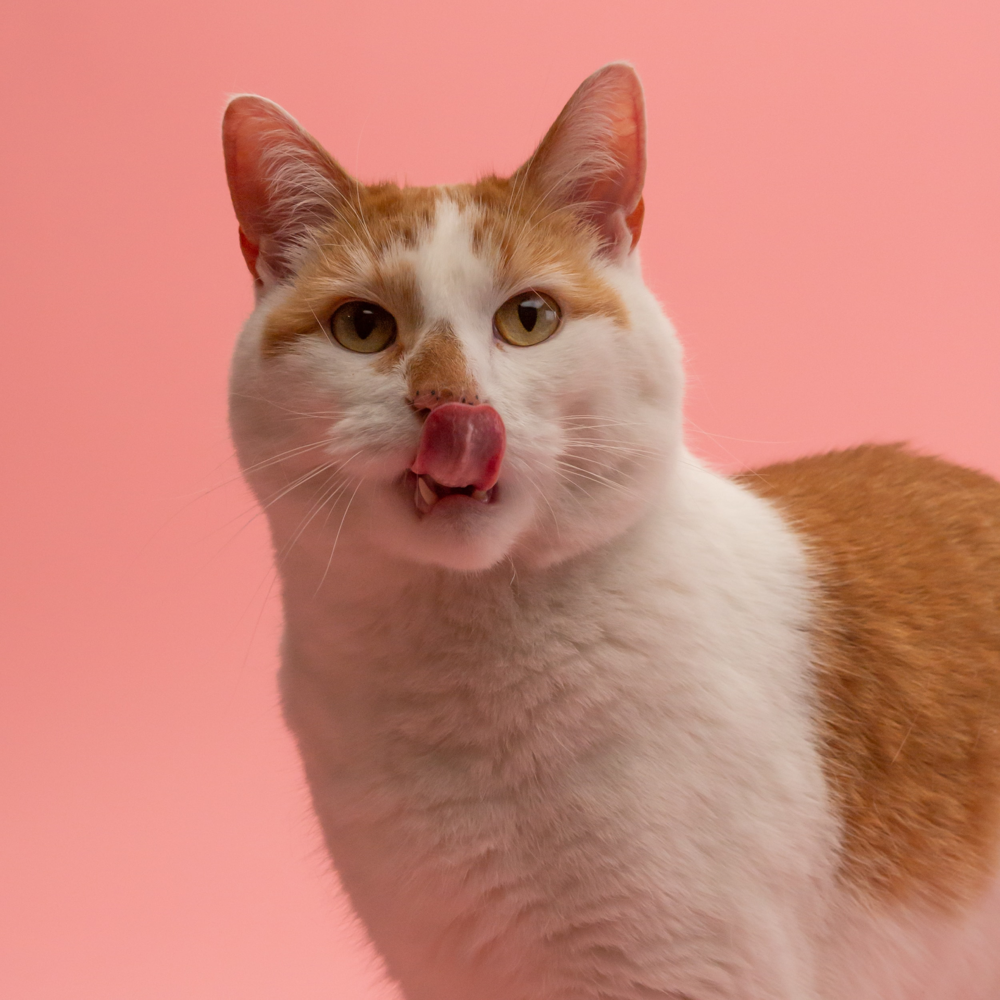
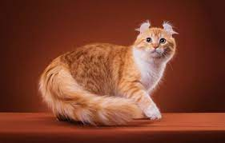

Известные породы :
Девон-рекс
Девон-рекс — одна из самых молодых и необычных пород семейства кошачьих, для которой не потребовалась селекция.Девон-рекс — очень умная, уникально выглядящая порода кошек, известная своей короткой волнистой шерстью и большими ушами. Краткие сведения · Кошек этой породы иногда называют эльфами или инопланетянами из-за необычной внешности: огромных ушей и больших глаз; ·Девон-рекса называют «маленький монстр» и «обезьянка в кошачьей шкуре».Особенности характера: Девон-рекс - активная, энергичная порода. Это настоящий маленький клоун. Девон рекс ... Очень сообразительные, активные и игривые кошки с необычной внешностью.
Американский керл
Американский кёрл — кошка средних размеров, пропорциональна, имеет шелковистую шерсть средней длины с плотно прилегающими к телу волосками.
Египетская мау
Египетские мау — кошки средних размеров с короткой мягкой шерстью.Египетская мау – кошка с длинным телом, в основном среднего размера, самцы крупнее, чем самки. У мау мускулистое и крепкое телосложение.
Кошки породы корат — очень нежные и ласковые создания, они любят, когда их гладят, с удовольствием сидят на руках у людей и проводят с ними время.Кора́т — порода домашней кошки родом из Таиланда, одна из древнейших пород кошек.Корат — это идеальный компаньон и для большой дружной семьи, и для одинокого человека.Корат – порода домашних кошек небольшого размера, с серо-голубой шерстью, игривых и привязанных к людям. Очень ревнивы;Корат – это тайская порода кошек, которая окружена многими традициями. В целом, они считаются символом удачи. Корат – грациозная кошка с зелеными глазами и серебристой шерсткой. По стандарту WCF тело у кората средней величины, мускулистое, гибкое, сильное, но не массивное. Они крепко привязываются к владельцам, любят сидеть на руках и стараются держаться как можно ближе к человеку.Корат. Энергичные, умные, любвеобильные и ревнивые кораты принимают других кошек, но стремятся показать свое превосходство.
.jfif)
Корат